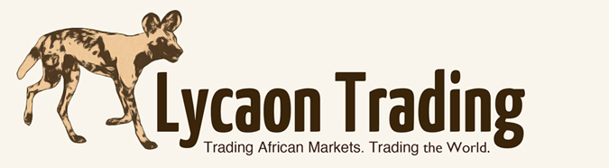

To donate: click here
Learning Centre
From its outset, Lycaon Trading has had a strong ethos of mentorship and assisting others to reach their investment goals. Lycaon takes a personal approach to learning and mentorship and you are encouraged to ask questions and engage with Lycaon on Social Media channels. We will do our best to connect with you - whether you are a seasoned trader or just learning the basics of how to trade. Some of the topics covered are:
JK's 25 Rules of Trading | What Are Futures | How to Trade Futures | Trend Following | Creating Your Own Trade System | Trading Discipline | Technical vs. Fundamental Analysis
JK's 25 Essential Rules of Trading
This list has been developed by the founder JK Rentzke after years research, experience, reading, and keeping a trade journal. We recommend you return to the list frequently. Memorise them, and keep them close to your trading terminals.
#1 The Market Pays You To Be Disciplined
Trading with discipline will put more money in your pocket and take less money out. The one constant truth concerning the markets is that discipline = increased profits.
Build yourself a detailed trading plan and stick to it. At one stage I had a problem of overriding my system when I thought there was something that it was not picking up. It proved to be a bad decision every time. Also, if you don't follow your system how do you track its performance?
#2 Don't Claim to be Disciplined If You Are Not Disciplined 100 Percent Of The Time
Consistency and persistence are key performance objectives of successful professional traders.Being disciplined is of the utmost importance, but it s not a sometimes thing. It just takes one undisciplined trade to end your career as a trader. You must be disciplined on every single trade. Discipline does not mean making money it means following all aspects of your trading to the last detail.
#3 Always Reduce Your Trade Size When You're Trading Poorly
give you your money back.If you have two losing trades in a row, always lower your trade size size down to a one lot(contract). If my next two trades are profitable, then move the trade size back up to your original lot size. Increase when winning, decrease when losing- not the other way around.
#4 Never Turn A Winner Into a Loser
This one is so important for your confidence as a trader. On many occasions in the past I have had this happen to me. To watch a great winning trade reverse into a loser or get stopped out really takes the wind out of a traders sails.The market has rewarded you by moving in the direction of your position, however, you are not satisfied with a small winner. Thus you hold onto the trade in the hopes of a larger gain, only to watch the market turn and move against you. Of course, inevitably you now hesitate and the trade further deteriorates into a substantial loss. Its greed that leads to this occurring.
I now prevent this from happening in my trading by using a well calculated trailing stop loss once a trade is moving in my favour a an amount greater than my initial stop risk.
Don't be greedy, bank the profit and look for the next one.
JK
#5 Your Biggest Loser Can't Exceed Your Biggest Winner
Keep a trade log of all your trades throughout the session. If, for example, you know that, so far, your biggest winner on the day is five e-Mini S&P points, then do not allow a losing trade to exceed those five points. If you do allow a loss to exceed your biggest gain then, effectively, what you have when you net out the biggest winner and biggest loss is a net loss on the two trades. Not good. When you look through your trading log have a look at the size of your average winners vs your average losers. Your losers should be at least 50% smaller. I have a 3:1 win to loss ratio target. Set your stops within this ratio to ensure that your losers remain smaller than your winners.
JK
#6 Develop A Methodology And Stick With It. Don't Change Methodologies From Day to Day
To trully test the success of a trading system it needs to be built correctly with all the required parameters and then tested accurately. You cannot test a systems success if you keep chopping and changing methodologies or not following your system 100%. Give your system time to prove itself but following it completely for a set period. Then you can evaluate it and make changes if necessary.
I remember once, when trading a specific system, I read a report by a market analyst slating the stop loss system I was using, although it had been successful for me. I immediately took the advice and adopted their stop loss strategy. It did not suit my trading at all and caused some rather nasty losses.
Stick to your system and especially remember not to mess with a system that is working well. "If it aint broke..."
#7 Be Yourself. Don't Try To Be Someone Else
Just because somebody else trades a particular strategy successfully, does not mean you will. Build your strategy around your personality. How much risk can you handle ? Can you deal with large sized trades? 10 S&P contracts could be huge for you but tiny for the next guy. Can you sleep at night with positions open or do you need to cash out before the closing bell so that you can get some shut eye? Learn to accept your comfort zone as it relates to trade size and risk so that you can do the same thing day in and day out. Consistency is only possible if your strategy fits your personality. You are who you are.
#8 You Always Want To Be Able To Come Bank And Play The Next Day
Once again, this rule refers specifically to position sizing and risk management. Without appropriate position sizing your trading career will be over before you know it. Never get into a situation where you no longer have enough money in your account to trade again tomorrow. Its mentally a huge ask to come back from a set back like this, ask me- I know!
I have a saying- "If you get a margin call (even just one) you should not be trading." Getting a margin call is the worst thing that can happen to you as a trader. I've got a clean sheet in this regard and will keep it this way. Getting a margin call is like getting KO'ed by an opponent three weight divisions below you. If this happens, the lesson is: Its time to retire.
Never put yourself in the precarious position of losing more money than you can afford. The worst feeling in the world is wanting to trade and not being able to do so because the equity in your account is too low and your brokerage firm will not allow you to continue unless you submit more funds.
Always make sure you can come back to the markets and trade tomorrow.
#9 Earn The Right To Trade Bigger
Too many new traders think that because they have $25,000 equity in their trading account that they somehow have the right to trade five or ten e-Mini S&P contracts. This cannot be further from the truth. If you can't trade a one lot successfully, what makes you think that you have the right to trade a 10 lot?
Be careful of increasing your trade size after a losing streak in anattempt to make back what you have lost. It's not going to work out,its just poor risk management.
Increase your trade size as your trading success increases. I'm not talking about doubling up after you've had a string of five winners in a row. I'm talking about increasing your trade size once you are consistently following your rules and achieving your goals.
Remember; if you are trading poorly with two lots you must lower your trade size down to a one lot.
#10 Get Out of Your Losses
You are not a "loser" because you have a losing trade on. You are, however, a loser if you do not get out of the losing trade once you recognize that the trade is no good. It's amazing to me how accurate your gut is as a market indicator. If, in your gut, you have the idea that the trade is no good then it's probably no good. Time to exit. If your system says the trade is over. Time to exit.
Every trader has losing trades. Its the ones who manage their losses (i.e. exit as per rules) that win at trading.
#11 Your First Loss is Your Best Loss
Just the stress of managing a loss that is getting out of control is unbearable and likely to affect the rest of your trading. If you ever hear yourself saying:"I'll just hold it until its in the money" you know the trade is going badly so just close it now. Less stress, less pressure, less chance of wiping out your account. All traders make losing trades or even the odd mistake. Just get out and look for your next opportunity.
#12 Do Not Hope and Pray Or You Will Lose
Just that the fact that you are hoping shows you that its time to get out. Trades should be based on a defined system. If there is any hoping and praying, your position should not be in the market. Easier said than done, I know. Markets are not a perfect science and sometimes it seems that for every outcome you expect, the opposite occurs.It feels like the market Gods are against you! Take that lose and re-assess. Build some processes into your system to guide you when you feel out of sync with the markets. Try referring to a longer time frame or assessing the overall trend by reviewing your favourite moving average. But, whatever you do- don't hope and pray because you will lose.
#13 Don't Worry About News, It's History
Often the news can distort your view of your trading system. I have previously not taken a trade because the news conflicts with the trading signal that my system provided, only to find that I missed a great trade. Switch off CNBC, MSNBC, Bloomberg TV etc. The talking heads on these programs are lagging indicators, not leading ones.
They are trying to justify why a certain reaction took place, but have no idea what is going to happen next. The fact is: The reporting that you hear on thebusiness programs is "old news." The story has already been dissected and consumed by the professional market participants long before the "news" has been disseminated. Do not trade off of the reporting. It'stoo late.
#14 Don't Speculate. If You DO, You Will Lose
It's those Hail Mary trades that are going to sink you. Betting the farm on a sure thing might work once, but you are not going to have a long trading career. Have a system and work at it every day. Be a trader not a gambler. Use your edge to to place high probability, low risk trades. The trader with the steady equity curve will beat the speculator with the wild swinging account- it's been proven.
#15 Love To Lose Money
Embrace the fact that as a trader you are going to make losing trades. You need to love to get out of these trades fast. If you are afraid to lose money on a trade you are going to ride those losers until they do serious damage to your account. Love to cut those trades that are not working out. Take the loss and focus on your winning trades. Actually enjoy the process by focusing on the fact that you are reducing your anxiety and increasing your chances of success by taking that loss.
#16 If Your Trade Is Not Going ANywhere In A Given Time-Frame, It's Time To Exit
You have been here before. You get an entry signal from your system and obey all the rules and enter, but the market just does nothing. You do not get stopped out but you are out of the money. If the market just stays flat for what seems like an age (this could differ depending on the time frame you trade) then it is best just to get out. Jesse Livermore always said if the market does not do what you are expecting it to do, close your position.
The longer the market does not do what you thought it would the lower the probability of the trade panning out. Listen to the market, if it is telling you that buyers and sellers are happy with the current price then its not a market you want to trade. You always want to be in the high probability trades and not hoping and praying that it works out.
#17 Never Take A Big Loss. Only a Big Loss Can Hurt You.
Big losses prevent you from having a winning day. They wipe out too many small winners that you have worked so hard to achieve. Big losses also "kill you" from a psychological and emotional standpoint. It takes a long time to get your confidence back after taking a big loss on a trade. Always ensure that you can come back to the markets and fight another day. Keep your losses small and keep coming back.
#18 Make A Little Bit Everyday. Dig Your Ditches. Don't Fill Them In
It is amazing how quickly your trading account will build up over time just by making a little bit every day. Its the big losses that kill an independent trader. If you focus on just making a few points every day, you'll be amazed at how your account will grow.
#19 Hit Singles, Not Sixes
Trading is like the great sport of Cricket. Never go into a trade expecting to hit a six(home run). Concentrate on getting the singles and when the chance for a big six presents itself you will be ready.You should never approach a trade with the idea that it's going to be a huge winner. Sometimes they turn out that way but for the most part you'll be growing your account by taking the singles. Patience at the batting crease will keep your account ticking over at lower risk than striking out early on a hopeful "six or nix". Trade like its a five day test, not a 20 over game. Trade like Jacques Kallis bats.
#20 Consistency Builds Confidence and Control.
"How nice is it to be able to turn on your PC in the morning knowing that if you play by the Rules, trade with discipline and stick to your methodology, the probability of a successful day is high." Douglas Zalesky Its as simple as that. Keep doing what works, keep chipping away and you will not only be a profitable trader but you'll have a far less stressful trading experience.
Consistency causes greater confidence, confidence causes better trading. Better trading results in more profits. More profits allow you to increase your trade size. Bigger, better trades causes more profits...and so on...and so on... If you want to be a more profitable trader grow your confidence though consistency.
#21 Scale Out Your Winners
We now move into the last five rules in the 25 rules of trading series by Douglas E. Zalesky that we have been running. All previous posts are searchable on this blog. Once we have profiled all 25 rules I'll prepare a summary and post it on this blog. JK
The net effect of scaling out of your winners will be an increased average win per trade while keeping your losses to your pre-defined risk parameters. I found it tough to scale out of winners as often we just want to close our position and bank the profits, other times we keep it open too long as greed sets in. You should never scale out of your losers. If your trade size is more than a one lot and your trade is a loser, you must exit the entire position en masse. If your trade size is more than a one lot and your trade is a winner, it is best to exit one-half of your position at your first price target.
If you trade with protective stop-loss orders, you should amend the order to reflect the change in trade size (remember you have exited one half of your position) and raise or lower the stop price, depending on whether it's a long or short position, to your original initiating trade entry price. You now are essentially "playing with the house's money." You can't lose on the remaining position, and that's obviously a fantastic position in which to put yourself. Place a limit order a few tics above or below the market, depending on your position, sit back and relax. JK
#22 Make The Same Kinds Of Trades Over and Over Again
Develop your play-book by building a list of trade set-ups that you love and then trade them again and again. Stick to the set-ups that work for you and keep working at them. Every traders play-book is different so build your own play-book of trades and incorporate them into your trading plan. Once you develop confidence in your set-ups you can start to trade the best set-ups with size as they are your higher probability trades. JK
#23 Be Decisive. Don't Procrastinate, Don't Hesitate
It comes down to having a system that you believe in and trust. If you have built and tested a water tight trading system, then there is no need to hesitate or procrastinate when you get a signal. There is nothing more frustrating than getting a market call correct but not being in a trade to take advantage of your astute analysis. The net result of procrastination and hesitation is the trader was correct in deducing market direction but his profit on the trade was zero.Getting a market call right might get you bragging rights for a day, but its not going to put food on the table. We don't get paid in this business unless we put the trade on. Don't over analyse the trade. Place the trade and then manage it. If you're wrong,get out. You'll never be right unless you actually make the trade.
#24 All Traders Are Created Equal In The Eyes Of The Market
We all start out the day the same. We all start out at zero. Once the bell rings and trading begins, its how we conduct ourselves from a behavioural standpoint that will dictate whether or not we will make money on the day.
It doesn't matter who you are or who you know. With electronic trading platforms anyone can access markets. Follow these rules, stick to your system and manage your risk and you'll be OK. Its all up to you. Take responsibility.
#25 It's the Market Itself That Wields The Ultimate Scale Of Justice
The market moves wherever it wants to go. It does not care about you or me. It does not play favourites. It does not discriminate. It does not intentionally harm any one individual. The market is always right. You must learn to respect the market. The market will mercilessly punish you if you do not play by the Rules. Learn to condition yourself to play by the 25 Rules of Trading Discipline and you will be rewarded.
Vision Statement
 "My vision is of creating a business built on providing a service and product that will benefit society, whilst taking us as professional traders on a journey of self discovery and improvement. The goal in trading and in life is for us to be the best that we possibly can be."
JK Rentzke
"My vision is of creating a business built on providing a service and product that will benefit society, whilst taking us as professional traders on a journey of self discovery and improvement. The goal in trading and in life is for us to be the best that we possibly can be."
JK Rentzke
Ideas On StockTwits
Our Partners